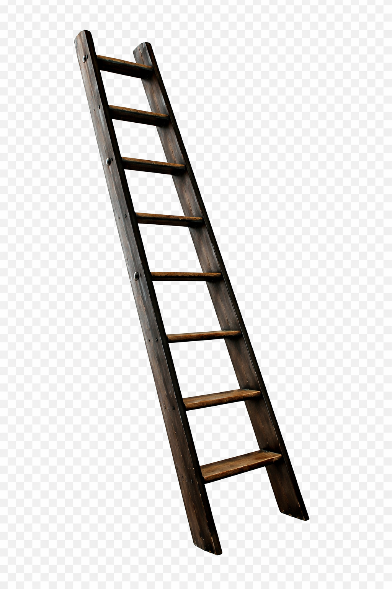

What Is Knowledge?

We often assume that what we believe is simply “true.”
But beliefs come from somewhere:
- Family conversations
- School education
- Media stories
- Cultural traditions
- Personal experiences
The field that studies how we know things is called epistemology. It asks questions like:
- What counts as evidence?
- Who is considered credible?
- How do beliefs change?
Understanding knowledge helps us understand society.

"Knowledge is always situated, influenced by our experiences, our identities, and our perspectives."

Knowledge vs Opinion
Instruction: Sort the statements based on whether they rely more on evidence or personal belief.
Evidence-based claims
- “Research shows that stress affects health.”
- “Climate patterns are changing according to data.”
- “This policy improved graduation rates.”
Belief or assumption
- “Boys are naturally better leaders.”
- “Women are more emotional.”
- “Real men don’t show weakness.”

"Belief in the general acceptability of evidence is the foundation of democracy."
Situated Knowledge
Scholar Donna Haraway introduced the idea of situated knowledge. She argued that no one sees the world from a completely neutral position.
Our experiences, identities, and environments shape how we understand reality. This doesn’t mean truth doesn’t exist. It means perspective matters. Recognizing perspective can actually make knowledge more accurate, not less.

"Situated knowledge does not deny truth, it simply refuses to separate knowledge from perspective."
Cognitive Biases
Our understanding of the world is often shaped by cognitive biases — mental shortcuts that can lead to faulty thinking and poor decision-making.
Some common cognitive biases include:
- Confirmation bias
- Anchoring bias
- Availability heuristic
- Bandwagon effect
Being aware of these biases helps us make more informed, objective decisions.

"We are all subject to biases, but recognizing them allows us to make better decisions."
QUEER as a Method of Learning
Queer theory challenges conventional ideas about gender, sexuality, and knowledge. It offers a unique perspective on how we learn, unlearn, and approach social structures.
By embracing fluidity and complexity, queer theory allows us to question dominant narratives and think critically about what we consider “truth.”

"Gender is not something we are, but something we do."